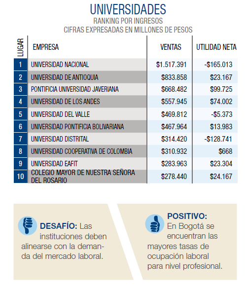
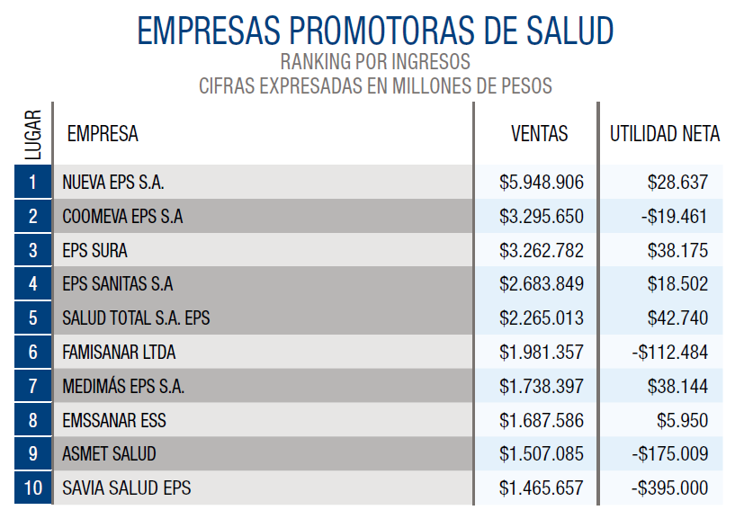
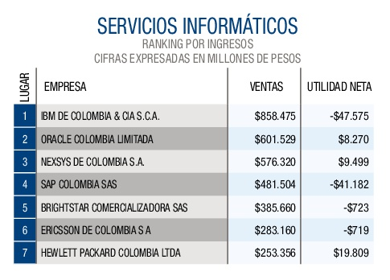
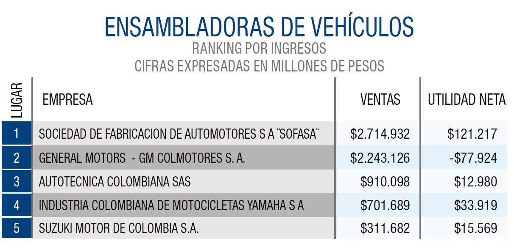
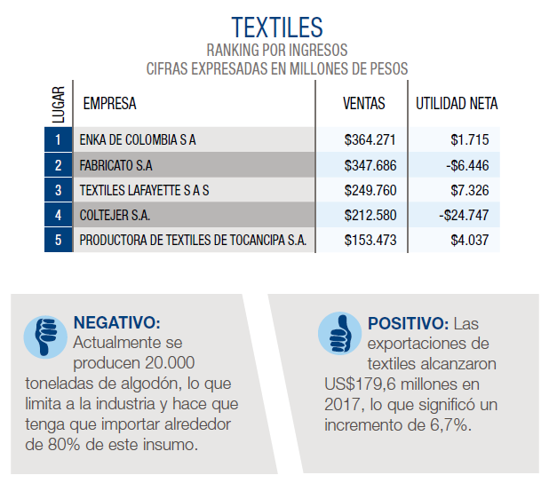
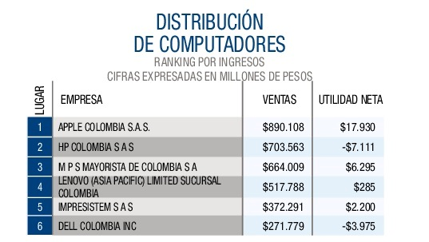
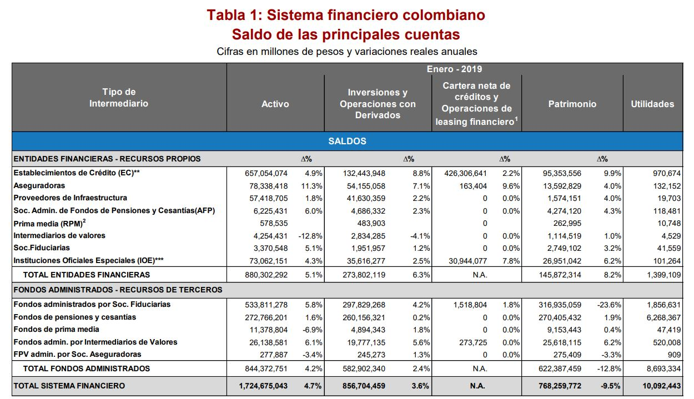
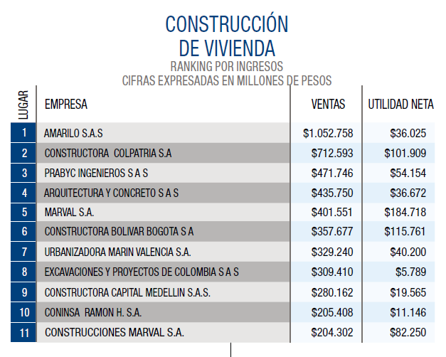
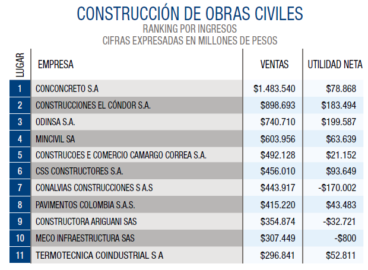

Sectores productivos
Sector agropecuario

Este sector ha tenido un crecimiento que se complementa de las condiciones climáticas del
país y que
permiten el sustento de la actividad. El gobierno nacional dirige una gran parte de sus
gastos a la
inversión de este sector.
Según el Departamento Administrativo Nacional de Estadística (DANE) en el segundo trimestre
de 2018 la economía colombiana creció un 2,8%. En el caso del sector de agricultura,
ganadería, caza, silvicultura y pesca el PIB se incrementó 5,9%, ocupando el segundo lugar
después del renglón de actividades profesionales, científicas y técnicas, que creció 6,6%.
No obstante, el sector Agropecuario, Silvícola y Pesquero tiene un peso medio en la economía
nacional, pues ocupó el séptimo lugar entre 12 sectores, en la participación del PIB total
de la economía, con un 6,9%, en el PIB del segundo trimestre de 2018.
El primer lugar lo ocupa Comercio al por mayor y al por menor con un 18,3%. Le siguen
Administración pública y defensa con un 16,2%; Industrias manufactureras con un 13,3%;
Actividades inmobiliarias con un 10%; Actividades profesionales, científicas y técnicas con
un 8,1%; Construcción con un 6,9% y Agricultura, ganadería, caza, silvicultura y pesca,
también con un 6,9%
Sector de servicios
Universidades

Cada año se gradúan más de 300 mil personas de educación superior en Colombia, y según un
estudio reciente del Dane, a mayor formación profesional mayor ocupación y mejores salarios.
Por ejemplo, en el año 2016, los ocupados con nivel de formación universitario recibieron en
promedio un salario mensual de $2’224.564, mientras que los ocupados con nivel de formación
técnico profesional y tecnológico $1’089.760 y los graduados de posgrado $4’114.200.
Empresas promotoras de la salud (EPS)

En los últimos años, el sector se ha visto empañado por algunas situaciones que no han sido
positivas, pero otras que le han ayudado a mejorar su percepción. Desde el punto de vista de
cobertura ha mejorado sus índices: en 2016 el país consolidó su cobertura universal en
salud; además, redujo el precio de medicamentos para enfermedades de alto costo y logró el
control más exitoso de la región en Zika.
Turismo
De los países de Latinoamérica, Colombia está entre los 5 con mayor flujo migratorio y una
participación de 0,27% del total de llegadas en el mundo, en 2017. Durante el periodo enero
– diciembre el receptivo total de viajeros fue de 6.531.496. “En 2017 recibimos 3,2 millones
de viajeros extranjeros no residentes, 24,7% más que en 2016, y no sólo de mercados
tradicionales como Estados Unidos, sino de otros que vienen presentando crecimientos
importantes, como el europeo y el asiático”, destaca Felipe Jaramillo, presidente de
Procolombia.
El turismo internacional hacia Colombia crece casi tres veces más que el promedio mundial,
según la Organización Mundial del Turismo, y más de ocho veces el promedio de América. Puede
haber muchas causas de este crecimiento acelerado, y una de ellas es el fin del conflicto
armado, que gracias a su reconcomiendo mundial ha impulsado a la industria de turismo. Por
esta razón, el Gobierno Nacional desde el año pasado puso en marcha la campaña ‘Es el
momento de Colombia, seguro te va a encantar’, que promueve el turismo por zonas del país
que en tiempos de conflicto era imposible visitar. Este año el Ministerio de Comercio,
Industria y Turismo diseñó seis nuevas rutas turísticas dentro de la misma campaña, cinco de
estas rutas son geográficas y una es temática.
NEGATIVO: Falta de organismos de control para promover el ecoturismo y disminuir el impacto
ambiental en temporadas altas.
POSITIVO: La industria del turismo es la tercera generadora de divisas en el país, después
del petróleo y el carbón.
Servicios informaticos

Así, el porcentaje de empresarios que ya conoce qué es la Cuarta Revolución Industrial pasó
de 43,7% a 65,2% en el último año, con porcentajes muy similares entre el sector industrial
(65.1%) y los del resto de sectores (65.3%). “La transformación digital continúa creciendo a
paso acelerado; las empresas de la región no solo están adoptando la nube y las plataformas
empresariales, sino que cada vez son más las que se están subiendo a las nuevas
tecnologías”, explica Claudio Muruzabal, Presidente de SAP Latinoamérica. Un ejemplo de
ello, en el segmento de salud, es el Hospital Universitario de San Vicente Fundación,
especializado en suministrar servicios de salud complejos e investigación médica de alto
nivel. Recientemente adquirió la plataforma HANA para modernizar sus datos financieros y
médicos en beneficio de los pacientes.
Sector industrial
Ensambladora de vehiculos

Con 74.381 vehículos matriculados entre enero y abril del 2017. La cifra equivale
a una variación positiva del 1,5% respecto al mismo período del año anterior (2016), cuando se
matricularon 73.250 vehículos.
En el acumulado se destacan los segmentos de Utilitarios, “Pick Ups” y Taxis, con
crecimientos de 5,2%, 43,4% y 1,8%, respectivamente, frente al año 2016. “En un año
difícil para el sector automotor colombiano, que continuó su decrecimiento por tercer año
consecutivo, nuestro balance de 2017 fue positivo”, explica Matthieu
Textiles

Actividades intensivas en mano de obra como la industria textil solo crecieron 0,1% dentro de
los subsectores de la industria en 2017.
En cuanto a exportaciones, los destinos más destacados son mercados como Estados Unidos,
México, Perú, y Costa Rica, pero también la industria está llegando con valor agregado a
nuevos lugares como Etiopía, Jordania, Kazajstán, Letonia, Eslovenia y Serbia.
De acuerdo con cifras del Dane, las exportaciones de textiles alcanzaron US$179,6 millones
en 2017, lo que significó un incremento de 6,7% frente al mismo periodo de 2016. Los
principales destinos de los textiles colombianos fueron Ecuador, México y Brasil, mientras
que las confecciones colombianas se ubicaron mejor en Estados Unidos, Ecuador y México.
Quimicos basicos e industriales
Uno de los sectores industriales con mejores registros fue el de productos químicos básicos
que registró un crecimiento de 5,1% en 2017, comparado con una caída de 5,1% en 2016. Este
sector se ha visto favorecido por el encadenamiento productivo con la refinación de
petróleo, y adicionalmente se ha beneficiado del buen momento del agro y su mayor demanda
por abonos y pesticidas.
Y es que los agroquímicos, un mercado que mueve cerca de US$600 millones al año, se han
convertido en una oportunidad para este sector. Estos pueden pesar hasta 35% del costo total
de producción de los cultivos, sobre todo, los relacionados con arroz, papa, flores y
banano.
En cuanto a exportaciones, el sector tuvo una desmejora, comparada con años anteriores. En
general, las exportaciones no-tradicionales del país alcanzaron los US$14.633 millones en
2017, cifra que no solo resulta inferior al pico de los US$18.336 millones logrados en 2012,
sino que también refleja un estancamiento del componente no-tradicional.
Positivo: Los productos químicos básicos tuvieron un crecimiento 5,1% en 2017.
Negativo: Las ventas externas de los productos químicos llegaron a US$2.797 millones anuales,
cayendo 0,7%.
Cifra: Los agroquímicos es un mercado que mueve cerca de US$600 millones al año.
Sector de transporte
Transporte pasajeros terrestre
El transporte de pasajeros terrestres no fue bueno en el 2017. De acuerdo con las
cifras de la Asociación para el Desarrollo Integral del Transporte Terrestre
Intermunicipal (Aditt), en 2017 se redujeron los viajes desde las terminales terrestres
en un 30%.
A pesar de que en las épocas de vacaciones y los festivos sí aumenta la demanda, con una
movilización de 45.000 vehículos y más de 300 millones de viajes al año, las aerolíneas
de bajo costo y las plataformas tecnológicas figuran como las grandes competencias del
sector.
Además, las terminales de transporte están en la mira. De acuerdo con una investigación
de la Superintendencia de Transportes, el 15% de las terminales del país no han
implementado planes para mejorar la calidad del servicio. De no cumplir con las
normativas que la Supertransporte inspeccionó, las terminales podrían pagar hasta 547
millones de pesos en multas.
NEGATIVO: Las aerolíneas de bajo costo le quitan diariamente viajeros al sector.
POSITIVO: En las temporadas de vacaciones y festivos aumenta la demanda de pasajeros
intermunicipales.
Transporte maritimo
Según el presidente de la ANI, Dimitri Zaninovich, la capacidad de los puertos colombianos
aumentó de 286 millones de toneladas en 2010 a 444 millones de toneladas en 2017, un
crecimiento mayor al 55%. Además de las inversiones ya realizadas, se estima que para 2021
la capacidad instalada se incrementará más de un 79% hasta llegar a 514 millones de
toneladas.
Además, el director aseguró que la ANI tiene 60 puertos concesionados en ocho zonas
portuarias del país. “Entre 2010 y 2017 se han adjudicado 12 concesiones portuarias, se
renovaron 15 permisos portuarios y se han invertido cerca de 158 millones de dólares en
canales de acceso”, afirmó.
Parte del desarrollo competitivo del sector se debe a la instalación de 31 grúas pórtico en
sociedades portuarias como Buenaventura, Cartagena y Santa Marta.
Uno de los puertos importantes en el país es la Sociedad Portuaria de Buenaventura (SPB),
que hoy cuenta con una capacidad máxima de 24.000 contenedores. Para 2018 tiene proyectada
una inversión de 2.5 millones de dólares para aumentar su capacidad en 6.000 contenedores.
POSITIVO: Con mayor inversión en infraestrucutra, las sociedad portuarias del país están
abriendo sus capacidades.
NEGATIVO: Los inversionistas no están teniendo en cuenta las condiciones en las que viven las
personas cercanas a los puertos.
Transporte aereo
Por cuenta del paro de 51 días de uno de los sindicatos de pilotos de Avianca, ACDAC, el
Sector no creció en el año 2017 y el número de pasajeros transportados fue similar al de
2016, unos 35,7 millones. Al margen de ello, el hecho más importante en la industria sigue
siendo que Latinoamérica está en el radar de las aerolíneas de bajo costo. ¿Serán tan
exitosas como en Europa y Estados Unidos, en una región con precaria infraestructura y sin
la cultura que el modelo exige? Por ejemplo, en febrero del 2018, Norwegian, la aerolínea de
bajo costo europea, comenzó a volar desde Londres a Buenos Aires ofreciendo tarifas desde
259 libras por trayecto, para un viaje de 14 horas.
NEGATIVO: Un paro de 50 días en la principal aerolínea del mercado ocasionó el estancamiento
de un mercado que ya es el tercero de la región.
POSITIVO: La eventual llegada de nuevas aerolíneas low cost como Norwegian, para viajes a
Europa, dinamizaría aún más el mercado colombiano.
Transporte de carga
De acuerdo con el gremio de transportadores Colfecar, las cifras de 2017 no resultaron
alentadoras y reflejan una desaceleración del sector de transporte de carga.
Según las cifras registradas, en 2017 la carga movilizada tuvo un ligero aumento de 0,31%
con respecto a 2016, pasando de 139,09 millones de toneladas a 139,53 millones en 2017.
Mientras tanto la facturación tuvo un aumento de 0,18%, pasando de 14,49 billones de pesos
en 2016 a 14,51 billones de pesos en 2017. Esto significa que los transportadores no están
transportando lo suficiente para alcanzar el pago de los fletes.
El bajo crecimiento de la industria es la principal explicación que da Colfecar a la
desaceleración del sector.
Este es un fenómeno que mantiene en vilo a los trasportadores colombianos por lo que han
tenido que realizar negociaciones con sus proveedores con el fin de lograr una equidad entre
la carga y la facturación.
POSITIVO: La carga movilizada tuvo un aumento positivo, a pesar del bajo crecimiento de la
economía.
NEGATIVO: El valor facturado por la movilización de una sola tonelada ha presentado una
caída en los últimos años que evidencian una depresión de los fletes.
Sector de comercio
Distribucion de computadores

El celular sigue siendo el dispositivo primordial para conectarse a Internet (en el total
nacional, la
cifra es del 81,7%), el computador mantiene su vigencia: el 47,5% lo hace mediante un PC de
escritorio y el
33,7% desde un portátil. En un año en el que el consumo se vio afectado por la
desaceleración de la economía, el
aumento del IVA al 19%, el alto endeudamiento de los hogares y el mayor desempleo, la venta
equipos de
informática y telecomunicaciones registró un crecimiento del 9,1% en 2017, que si bien fue
inferior a la de 2016
(12,1%) ratifica la importancia de este tipo de herramientas para las empresas y los
hogares, y contrasta con el
desempeño de las ventas minoristas, en general.
Almacenes de cadena e hipermercados
De acuerdo con las cifras registradas por el DANE, en 2017 los almacenes de cadena e
hipermercados tuvieron ventas por 52,4 billones de pesos, lo que representó un aumento del
4,2% con respecto a 2016
Adicionalmente, estos establecimientos emplearon en promedio 180.259 personas durante el
2017 aumentando la empleabilidad en un 2,8%, dato que bajó si se tiene en cuenta que hace
dos años ese porcentaje había sido de 4,2%.
Los grandes ganadores en este aumento de ventas fueron los almacenes de formato de bajo
costo o ‘Hard Discount’ que lograron ingresos por 5,8 billones de pesos, un aumento del 82%
frente al 2016. Por su parte, los formatos tradicionales, como los del Grupo Éxito, tuvieron
una reducción del 3,4%.
Y es que, cada vez son más los colombianos que le creen al formato de bajo costo. De acuerdo
con una encuesta realizada por Nielsen, el 49% de los compradores colombianos decidieron
cambiar sus hábitos de compra a marcas más económicas y el 80% de los encuestados aseguró
que busca economía en las cadenas de bajo costo.
Aprovechando el momento y la cercanía a los compradores, los formatos de bajo costo han
anunciado inversiones más agresivas para 2018, y para el final del año esperan contar con
unas 2.000 tiendas, un aumento de 470 con respecto a 2017.
NEGATIVO: Los almacenes tradicionales se han visto afectados con las cadenas de low cost y
han disminuido sus ventas.
POSITIVO: La diversificación de los almacenes de cadena le ha permitido a los colombianos más
alternativas para hacer sus compras.
Distribución de combustibles
En 2017, las ventas del sector ascendieron a 136,5 billones de pesos, a pesar de la
desaceleración en la venta de combustibles en un contexto de volatilidad en el precio del
barril de petróleo.
En cuanto al precio del galón de gasolina, de acuerdo con el Ministerio de Minas y Energía,
tuvo una variación de 847 pesos, empezando el año con 8.046 y terminando diciembre en 8.889
pesos. En el 2018 el precio fue cambiante. Desde enero hasta mayo oscilo entre los
8.900 y 9.200. En mayo, aumentó 99 pesos.
Según el Ministerio de Hacienda, este comportamiento se debe al aumento de los precios
internacionales del petróleo en la referencia Brent que se ubicaron en promedio en 71
dólares por barril para abril, con un alza del 36% con respecto al mismo mes de 2017 y del
8% frente a marzo de 2018, añadiendo que también se presentaron incrementos en los
referentes internacionales de gasolina (UNL87) y ACPM (ULSD), que subieron un 7,6% y 7,8%,
respectivamente.
NEGATIVO: La venta de combustible ilegal y el contrabando afecta las ventas del sector, en
especial del minorista.
POSITIVO: El menor consumo representa al uso más eficiente del combustible y así mismo
contribuye a menor contaminación.
Sector financiero

Según la superintendencia financiera, en su informe en cifras evidenció que En julio de 2016
los activos del sistema financiero colombiano alcanzaron un valor de $1,346.6 billones, tras
registrar un crecimiento real anual de 2.7%. Las inversiones y la cartera de créditos
contribuyeron con el 46.5% y el 29.9% del total del activo, respectivamente.
Sector territorial
Según el DANE la inversión de obras civiles tuvo una variación baja en los meses de marzo
hasta abril del 2018. El traspaso de la rehabilitación de las vías por parte del
INVIAS a
las concesiones 4G, todavía ha evidenciado la inversión, lo que tiene paradas a las
concesionarias.
En cuanto a las cifras de edificaciones del DANE, el crecimiento fue del 8,9%, paso de 4,18%
m2 (2015) al 4,56% m2 (2016).
Construcción de obras civiles

En 2017, estuvo en boca de todos, la corrupción de Odebrecht, un escándalo que
indirectamente incidió el desarrollo de los proyectos viales en el país, además de los
dilemas de financiación privada y pública que impidieron avanzar en los cierres financieros
y lo afectó en gran manera.
Y es que desde este escándalo, se hicieron más complejos los cierres financieros de la
segunda y tercera ola de proyectos. De acuerdo con la Cámara Colombiana de Infraestructura
(CCI), en lo corrido del 2017, el promedio de la ejecución presupuestal de las entidades del
sector transporte, entre las que se encuentran el Invías, la ANI y la Aerocivil, fue del 60%
y en cuanto al Programa de Concesiones Viales de Cuarta Generación, a diciembre de
2017,Gocho proyectos contaron con cierre financiero definitivo y 21 se encuentran en etapa
de construcción.
Por otra parte, aunque el ambiente político también genera incertidumbre, esclave seguir lo trazado hasta ahora en materia de infraestructura. Sin embargo, algo de alivio regulatorio ha traído la aprobación de la Ley 1882 de enero de 2018, que despeja la incertidumbre financiera, con la cual, se adicionan, modifican y dictan disposiciones orientadas a fortalecer la contratación pública en Colombia.
Construcción de vivienda

La demanda habitacional del 2017 fue baja, dada la situación económica que presentó el país
a lo largo de los 12 meses.
Entre marzo de 2017 y febrero de 2018, los lanzamientos llegaron a 167.253 unidades,
mostrando una contracción anual del 12,1%, al haber restado 22.974 unidades de la nueva
oferta durante el último año. Por su parte, las ventas sumaron 170.942 unidades en el mismo
periodo, 13,1% inferior a la del mismo período del año anterior.
En cuanto al comportamiento regional en el mismo período, se destaca positiva la dinámica
comercial de Tolima, Huila y Norte de Santander, con crecimientos anuales de 24,1%, 23,6% y
18,9% respectivamente. A su vez, los departamentos del norte del país: Magdalena, Bolívar,
Cesar y Atlántico continúan presentando aumentos en las ventas. Por el contrario, los cuatro
mercados de vivienda con más participación en el total, como Bogotá, Cundinamarca, Antioquia
y Valle del Cauca, siguen mostrando caídas significativas.
Según Camacol, las condiciones para adquirir vivienda están cambiando de manera favorable, gracias a las bajas tasas de interés y a los programas del gobierno para facilitar la compra en los segmentos medios y bajos. La recuperación se está dando, aunque de manera más lenta de lo que se esperaba.
Sector de comunicaciones
Construcción de vivienda
“Estamos invirtiendo mucho en la región, donde crecimos 8% el año pasado”, señaló el vocero
de la multinacional que se mostró optimista por las posibilidades de Colombia. “Todos los
elementos fundamentales que hacen al crecimiento y desarrollo de un país los tiene
Colombia”. En efecto, según la última encuesta TIC, al término del tercer trimestre del año
2017 el país alcanzó 28,4 millones de conexiones a Internet de banda ancha, de las cuales
15,8 millones se realizaron mediante la modalidad de suscripción en redes fijas y móviles, y
12,6 millones a través de conexiones móviles por demanda. En otras palabras, eso quiere
decir que el 57,7% de los hogares colombianos ya tiene algún tipo de acceso a internet.
NEGATIVO: El sector registra tasas de crecimiento negativas, que están afectando sus planes
de inversión.
POSITIVO: El acceso a Internet presentó un incremento del 1,7% con relación al segundo
trimestre del 2017.